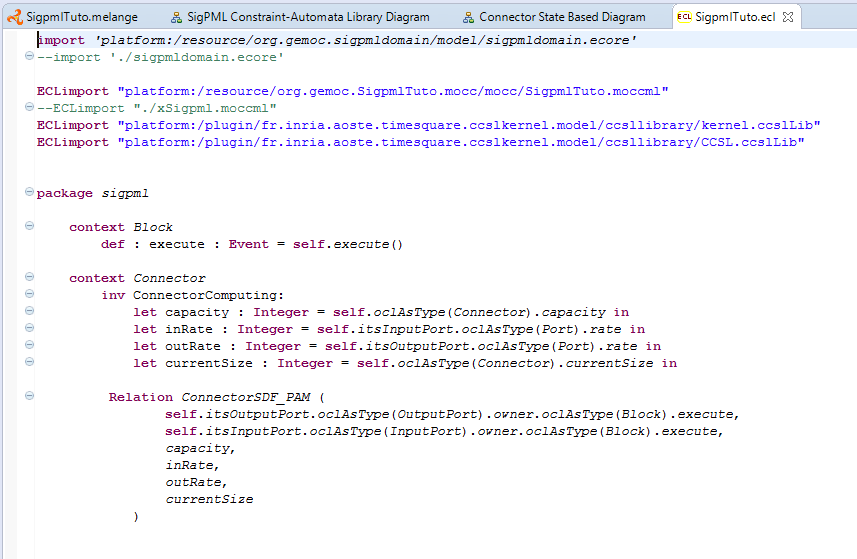

The DSE definition is related to declare the Domain Specific Events which define the event interface of our language.
The two sections DSE and MoCC definitions are tightly coupled. So you can create the two projects and iterate between the two projects in progress.
From the xDSML project, we select the associated wizard of the DSE definition. Select the name of SigpmlTuto.melange on the right click→ Create DSE project for language →select the SigpmlTuto language→ok
DSE project creation. 
The DSE wizard helps to select the root model element, in our case the Application and finish.
DSE wizard. 
An ECL program defines the mapping between the domain model, including ED and EF, and the MoCC definition of the previous section. In this program, you declare the metaclasses that you want to select ED or EF, and associating them with a MoCC definition.
A metaclass is referenced as Context and in this scope we define an event relative to the EF and also invariants that must be satisfied in the context of the metaclasse.
In this tutorial, two contexts are declared for the metaclasses Block and Connector. In the context of Block an event execute is defined relative to the execution function of the same name in the Block metaclass. In the context of Connector, an invariant is declared based on the call of the relation declaration defined previously in the MoCCML model. The arguments of this relation are associated to the attributes of the metaclasses Connector and also we can access by navigation expression to the others Ports (for the rate attribute) and Block (for the execute EF).
The source code is available through the ECL program and showed below
import 'platform:/resource/org.gemoc.sigpmldomain/model/sigpmldomain.ecore' --import './sigpmldomain.ecore' ECLimport "platform:/resource/org.gemoc.SigpmlTuto.mocc/mocc/SigpmlTuto.moccml" --ECLimport "./xSigpml.moccml" ECLimport "platform:/plugin/fr.inria.aoste.timesquare.ccslkernel.model/ccsllibrary/kernel.ccslLib" ECLimport "platform:/plugin/fr.inria.aoste.timesquare.ccslkernel.model/ccsllibrary/CCSL.ccslLib" package sigpml context Block def : execute : Event = self.execute() context Connector inv ConnectorComputing: let capacity : Integer = self.oclAsType(Connector).capacity in let inRate : Integer = self.itsInputPort.oclAsType(Port).rate in let outRate : Integer = self.itsOutputPort.oclAsType(Port).rate in let currentSize : Integer = self.oclAsType(Connector).currentSize in Relation ConnectorSDF_PAM ( self.itsOutputPort.oclAsType(OutputPort).owner.oclAsType(Block).execute, self.itsInputPort.oclAsType(InputPort).owner.oclAsType(Block).execute, capacity, inRate, outRate, currentSize ) endpackage
ECL Implemenattion. 
At the end of this step the SigPML language is completely in terms of the metamodel, the graphical syntax, the behavior code of the functions, the expression of the concurrent semantics and the mapping between them.
The last step is to define the animation view of the models as a debug extension of the graphical syntax.